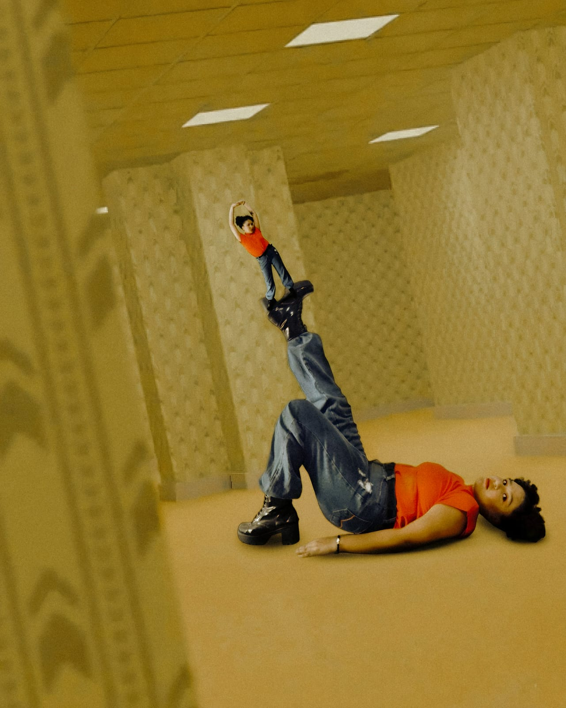
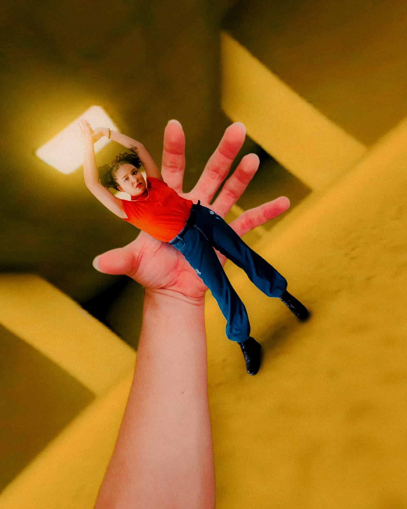
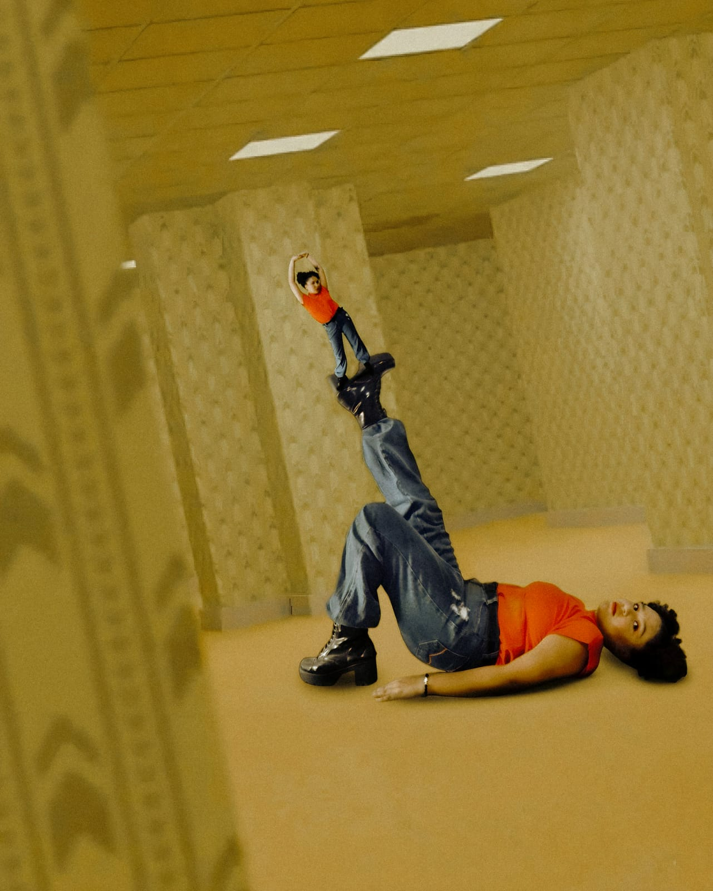
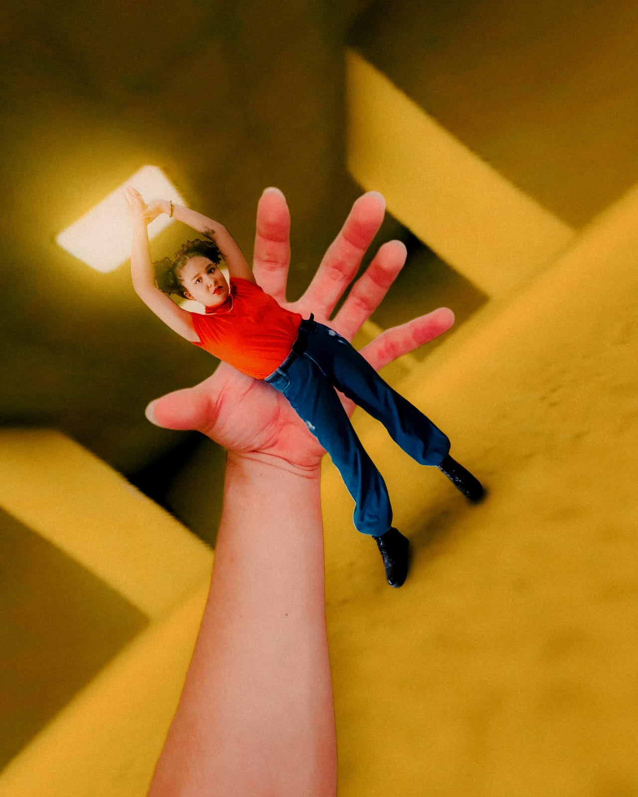
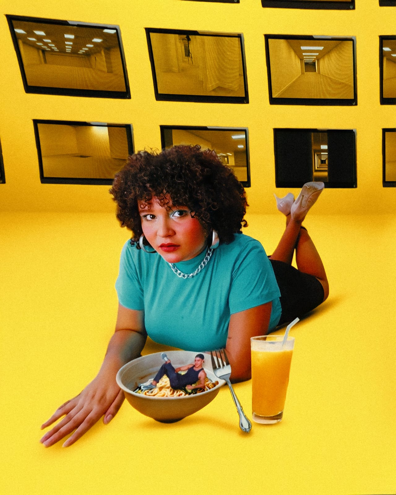
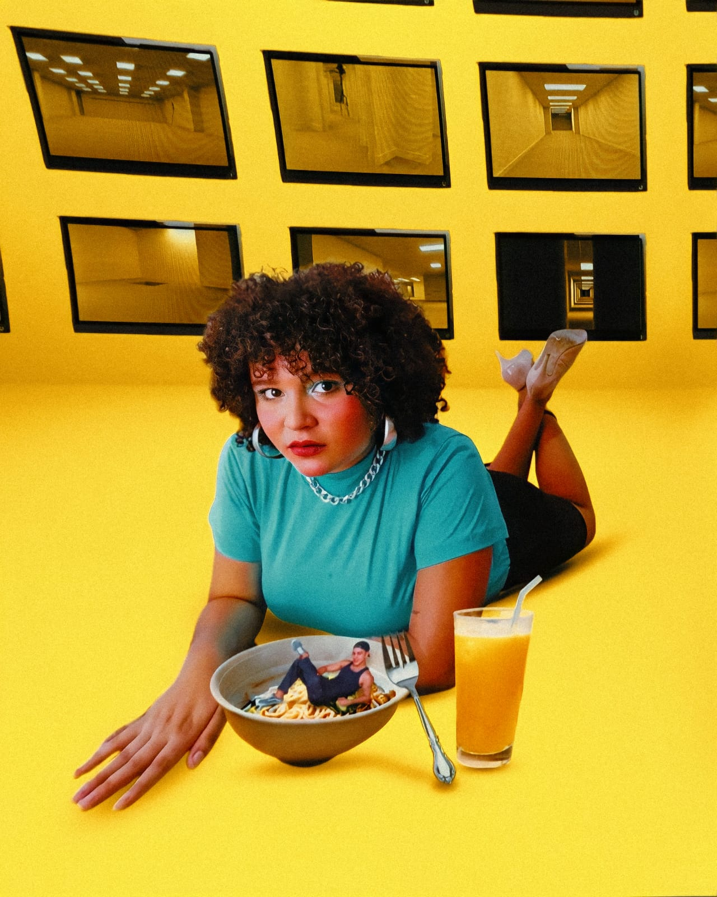

Eu sou...
Maria
Me chamo Maria Sthefany da Silva Nascimento. Natural da periferia de Fortaleza, atualmente residente em São Gonçalo do Amarante. Nascida em 01/12/2003. Sempre gostei de estar ligada à arte. Minha primeira apresentação foi aos 3 anos, na igreja que frequentava. Desde então, nunca mais saí dos palcos ou holofotes. Pela minha realidade, filha de costureira e pedreiro, ser artista parecia algo impossível. Mas hoje eu sei, onde devo me colocar e o que devo fazer, para realizar minhas metas e sonhos. Durante a minha formação no CPBT, fiz várias apresentações, mas as que mais se destacam são as apresentações de mudança de fase e o espetáculo Segunda Classe. Tive a oportunidade de encenar "O Rinoceronte" e "Sangue". Conclui meu curso com muito louvor, ganhando o famoso prêmio "Encena" pelo o Estado do Ceará. Pelos anos (2019 à 2023) como "Melhor Atriz", "Melhor Dramaturgia" e "Melhor espetáculo".
O "Espetáculo Segunda Classe" em Fortaleza parece ser uma produção ligada ao CPBT (Curso Princípios Básicos de Teatro) do Theatro José de Alencar (TJA), um evento de conclusão de turma, com apresentações anteriores no Palco Principal do TJA, mostrando cenas de teatro com os alunos, com foco em reflexões sobre os próprios atores, suas experiências e a realidade social, abordando a luta e resistência da arte em um contexto onde seu valor é questionado, e os artistas são, por vezes, vistos como "vagabundos". A sinopse indica que a peça se passa em um lugar imaginário, trazendo consigo um pouco de cada ator que está no palco, possivelmente representando a si mesmos e a condição de suas profissões.
Produzido pelo Curso Princípios Básicos de Teatro/TJA, foi o grande destaque da noite, levando para casa o prêmio de Melhor Espetáculo. "Fastio: Ceia da Fome", produzido pelo Curso Extensivo de Teatro- CCBJ, também se destacou, levando dois prêmios: Melhor Autor/Texto, para Anderson Nunes, Jeisy Santana e Virginia Deolics, e Melhor Ator, para Dudu Costa. A atriz Maria Sthefany, por sua vez, foi reconhecida como Melhor Atriz por sua atuação em "Segunda Classe". Os vencedores foram escolhidos por um júri composto por profissionais de teatro e críticos especializados. A premiação contou com a presença de diversas personalidades do mundo teatral cearense.

Uma figura central e respeitada no teatro cearense, conhecida como atriz, diretora e professora, com uma vida dedicada à arte no Ceará, atuando no teatro, cinema e televisão, e sendo reconhecida por seu trabalho em espetáculos importantes e formações de novos atores, especialmente ligada ao Theatro José de Alencar e projetos culturais como o Coletivo ABARRUA. Sua história é marcada por paixão e profissionalismo, sendo uma mestra que forma talentos e participa ativamente da cena cultural de Fortaleza.
Diretor e roteirista, formado pelo curso de dramaturgia do Instituto Dragão do Mar e pela Escola de Cinema da Ohio University, onde concluiu mestrado e onde venceu o prêmio Billman Fine Arts Award, pelo roteiro do curta "Port of Rafts".

Espetáculo teatral que aborda o caso de Miguel Otávio Santana da Silva, trazendo à cena reflexões profundas sobre racismo estrutural, desigualdade social e justiça.
A obra conta com a presença simbólica e emocional de sua mãe, Mirtes, em uma narrativa marcada por dor, resistência e memória.
Peça clássica de Eugène Ionesco que denuncia o conformismo social e a adesão cega a ideologias totalitárias, através da metáfora da transformação humana em rinocerontes.

Registros visuais de ensaios fotográficos e cenas de espetáculos.


 




 

Quer conversar, trocar ideias ou saber mais sobre os trabalhos? Entre em contato por qualquer um dos canais abaixo.